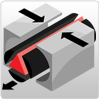
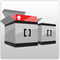

A Message from Jack Hughes
Welcome to the beta release of TopCoder Direct!
Since 2001, TopCoder has set the standard for identifying, evaluating and mobilizing the top software programmers and graphic designers in the world. In that time we have built a global community of more than 160,000 members who compete daily to design and build software applications for our customers, some of the largest companies in the world. Now, you have the power to directly access that community to get your project built – no matter how big or small.
Doing that is easy. Just tell the community what you need built, decide what that project is worth, launch a competition and our members will compete for your prize. You choose the winner from multiple submissions, so you only pay for the best, and your deliverable is available for download immediately. If it becomes too complicated, our members will be there to help you through the process.
The launch of TopCoder Direct is not simply the means for you to access the amazing pool of talent in this community; it’s your chance to become part of it. We are providing the tools for you to join the TopCoder Community, interact with our members, find the right people to move your project forward, and have the most talented people in the world building your application through TopCoder’s model of global competition.
The beta release of Direct is only the beginning. Today you can use your TopCoder Cockpit to launch a variety of design competitions on TopCoder Studio. Tomorrow, the sky will be the limit.
Whether you’re looking to redesign your company logo, build a small business or personal website or launch a major software application, the tools you will need to get it done by the TopCoder Community – quickly, efficiently, at a lower price and a higher quality - will be available to you. And as the scope of what you can do through TopCoder Direct expands, the resources available to you will increase in the form of online training materials, TopCoder member "Co-Pilots" to help guide you through the process, and access to the more than 1200 existing components currently in the TopCoder Software Catalogue.
I’m very excited about this release and the opportunities it represents for both our customers and our community. We’ll be working to improve and expand this process every day, so please let us know what you think by providing us some feedback about your experiences with TopCoder Direct.
Jack Hughes
Founder, TopCoder
Some of the most talented people in the world are ready to compete to build your next application.
On-demand access to the TopCoder community of 160,000+ developers, architects and graphic designers
The tools to launch a wide variety of competitions to source high-quality products
Unlimited enterprise usage of the full TopCoder component catalog
Subscribers to the TopCoder Global Platform have on-demand access to:
The TopCoder Developer Network
Over 160,000 members strong, the TopCoder community represents your virtual workforce comprised of brilliant individuals from virtually every country on Earth.
Our Asset-Based Development Methodology
On average, 50% of your next application already exists in the TopCoder Component Catalog. These components are free to subscribers.
Software Built Through Competition
TopCoder is a true meritocracy, which means you only pay for the best.
Still not sure?
Don't worry, you can change your tier at any time!
How will this Global Community build my application?
Through this methodology, you have a consistent and clear mechanism to utilize the TopCoder Platform. We provide a distinct set of contests and tools to defi ne the specific deliverables for your project, which are then presented to the TopCoder community through various competition types.
The phases and competitions may be used in series from start to finish, individually or in creative combinations to complete your tasks in the most effective way possible.
The Process
Specification
Your application requirements are defined using standard UML, prototyping, written specifi cations and test plans. Like every phase of the TopCoder Methodology, outputs of the specifi cation process are peer reviewed and scored to ensure completeness and quality. Creating prototypes up front helps our clients visualize the look and feel of the application early and saves valuable time later in the process.
 Application Architecture
Application Architecture
The architecture of the application is defined using standard UML and Architecture Competitions. The application is broken down into a component-based architecture, relevant pre-built catalog components are identified and component specifi cations are developed for Component Production.
 Component Production
Component Production
The heart of the TopCoder methodology is component production. Each professionally packaged, high quality software component is produced as the result of Component Design, Component Development and Component Testing Competitions. Components fall into one of two categories: catalog or custom. Catalog components are generic and are added to the TopCoder Component Catalog whereas custom components become the intellectual property of the client.
Assembly
The assembly of your application comes through a series of competitions as well. First the components are assembled into functioning modules, then the modules into full applications. In many cases, groups of developers form within the community to compete collaboratively as teams.
Certification
This phase uses testing competitions to test and certify application functionality based on requirements. Certifi cation also leverages Bug Races to address component and application code issues.
Deployment
The last phase of The TopCoder Methodology results in the deployment and testing of the fi nal deliverables in the target environment. This is where the very best results from multiple competitions and competitors from around the world get delivered to your organization!
The Value
Centered on software best practices and proven engineering and manufacturing disciplines from a variety of industries, the TopCoder Methodology
- Delivers quality through measurable performance reviews of all work product via an online scorecard system and automated peer review process
- Provides formal and consistent documentation for every work product delivered, meaning complete traceability from requirements through final deliverables
- Promotes speed and scalability through parallel competitions and a growing virtual community
- Incorporates constant measurement and analytics to ensure you are always making well educated decisions